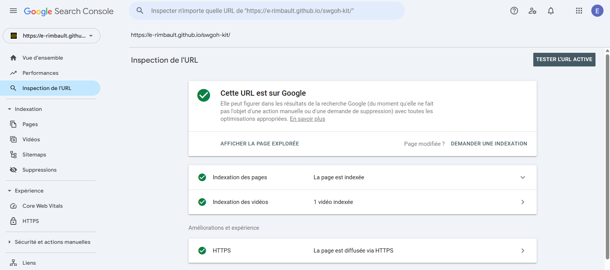
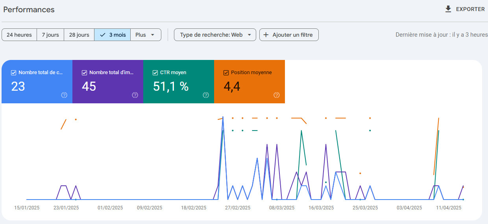

Déploiement du site SWGOH Wiki sur GitHub Pages
Présentation du projet
Le projet SWGOH Wiki est un site web statique qui présente des informations détaillées sur les personnages du jeu mobile Star Wars: Galaxy of Heroes (SWGOH). Le site permet aux joueurs de consulter les kits des personnages du jeu pour mieux comprendre leurs compétences et pouvoirs.
Le projet a été développé en utilisant les technologies suivantes :
- HTML pour la structure du contenu.
- CSS pour le design et la mise en page.
- JavaScript pour rendre le site interactif.
Outils utilisés
- Jeux mobiles - Le site présente des informations sur les personnages de SWGOH, un jeu mobile populaire.
- Site officiel du jeu - Star Wars: Galaxy of Heroes, utilisé pour la collecte d’informations et la validation des données.
- Visual Studio Code - Un éditeur de code que j'ai utilisé pour développer le site. Il m'a permis de travailler efficacement sur le HTML, le CSS et le JavaScript.
- Google Search Console - Pour le référencement et l'indexation de mon site sur Google Search. J'ai utilisé Google Search Console pour m'assurer que mon site soit visible et bien référencé sur les moteurs de recherche.
Le déploiement sur GitHub Pages
Pour rendre le site accessible en ligne, j'ai utilisé GitHub Pages, une fonctionnalité gratuite d'hébergement de sites web statiques. Voici les étapes que j'ai suivies :
- Création d'un dépôt Git sur GitHub et ajout du code source du projet.
- Activation de la fonctionnalité GitHub Pages via la branche main ou gh-pages.
- Le site est désormais accessible à l'adresse : https://e-rimbault.github.io/swgoh-kit/index.html.
 Lien du repository
Lien du repository
Référencement sur Google
Pour m'assurer que mon site soit bien visible sur Google, j'ai intégré une description SEO et utilisé Google Search Console pour indexer mon site. Cela permet à mon projet d'être plus facilement trouvé par des utilisateurs recherchant des informations sur SWGOH.


Voici une capture d'écran montrant l'interface de Google Search Console où j'ai suivi l'indexation de mon site.